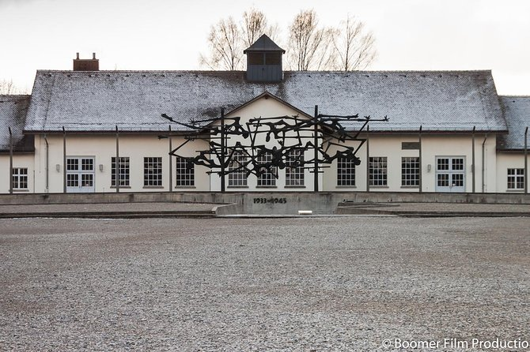
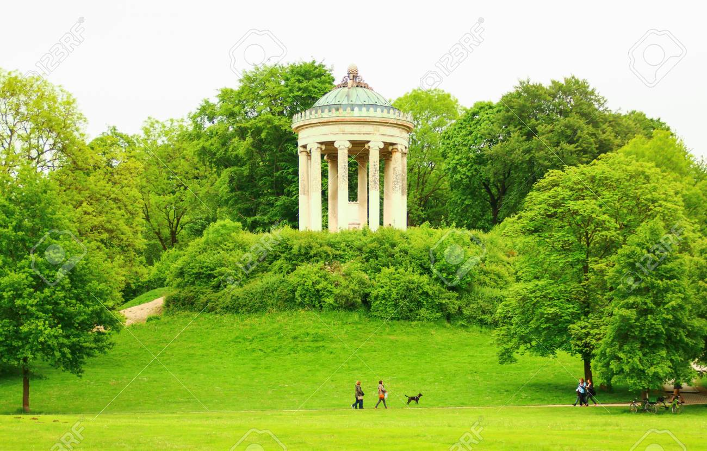
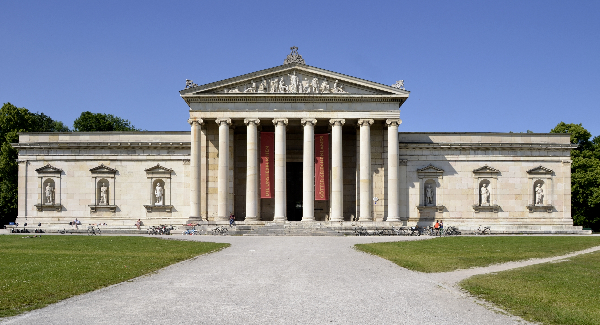
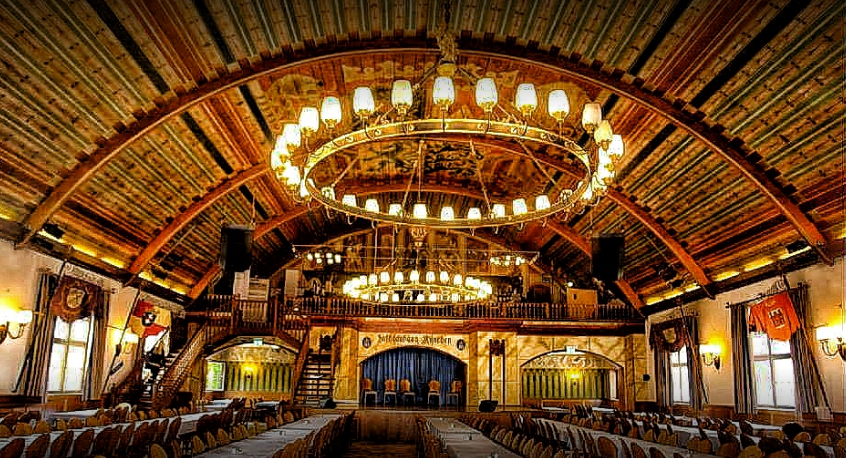
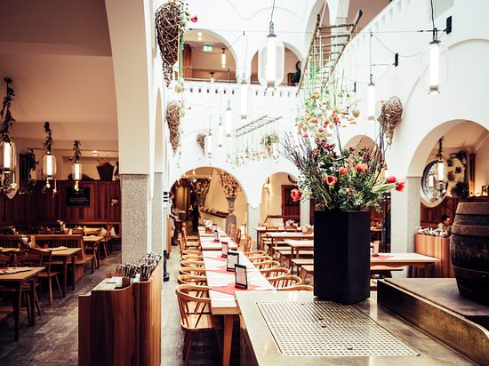
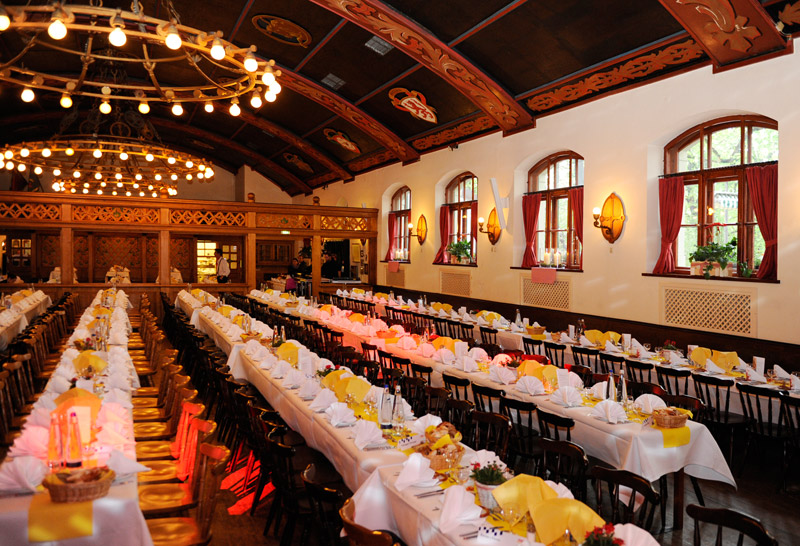

Cuna del movimiento nazi y escenario de Hitler tras la Primera Guerra Mundial, Múnich quedó destruida tras los bombardeos sufridos durante la Segunda Guerra Mundial. Tras una intensa rehabilitación la ciudad fue perfectamente reconstruida y se convirtió en uno de los destinos turísticos más atractivos y populares de Alemania.
Múnich cuenta con numerosos lugares de interés que permiten adentrarse en su corazón para conocer su pasado y su cara más actual.
Lugares y Restaurantes
Campo de concentración de dachau
Jardín Inglés
Gliptoteca de Múnich



Cervecería Hofbräuhaus
Donisl
Augustiner Keller



Itinerario de viaje
Día 1:
Visitar Nuevo y Antiguo ayuntamiento.
Realizar recorrido continúa en el viktualienmarkt, el mercado más grande de la ciudad.
Catedral Nuestra Señora de Múnich, o Frauenkirche, la iglesia más grande de Múnich.
Día 2:
Visitar las Tres Pinacotecas, en el barrio Kunstareal. Entre las tres cubren la historia del arte desde la Edad Media hasta el presente.
Realizar visita a la Gliptoteca de Múnich.
Caminata hasta el jardín inglés.
Día 3:
Museo Deutsches.
Museo BMW y BMW Welt.
Día 4:
Campo de concentración de Dachau, El primer campo de concentración del nazismo que funcionó como modelo para los campos que le seguirían.